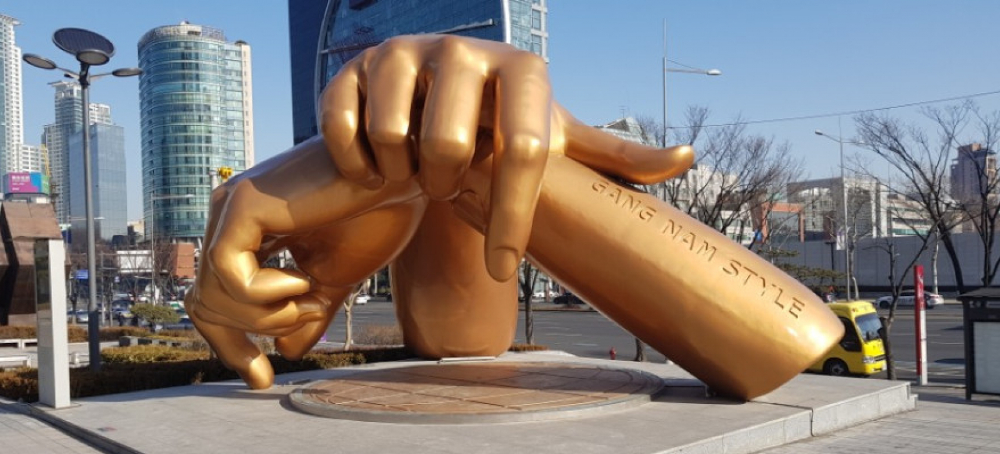

Marco Boquete
Last Update: 21/10/2022 23:06
Seoul has an abundance of beatiful and impressive monuments, many of them of not most are closely related to either Religion, Political conflicts (wars and war heroes) and Popular Culture.
One of the darkest phases in the history of this country is extremely well documented in this museum located in the Yongsan-dong area of Seoul.
It opened in 1994 on the former site of the army headquarters to exhibit and memorialize the military history of Korea.
Like the Cloud Gate of Chicago and the Charging Bull of Wall Street, a new landmark is made at the COEX East Gate, to portray Gangnams own style.
This is a new landmark of Gangnam. 2012 mega hit of the song Gangnam Style by PSY is still alive in Gangnam. Once you get on the stage below the hands, the song “Gangnam Style’ will be played for your perfect experience. Dance on the stage and take a picture for your long time memory of Gangnam tour.
Jogyesa Temple is the main temple for Zen Buddhism in Korea. It holds a very important place in the religious identity of the city and the nation itself.
Image Sources:
War Memorial
Gangnam Style
Jogyesa Temple